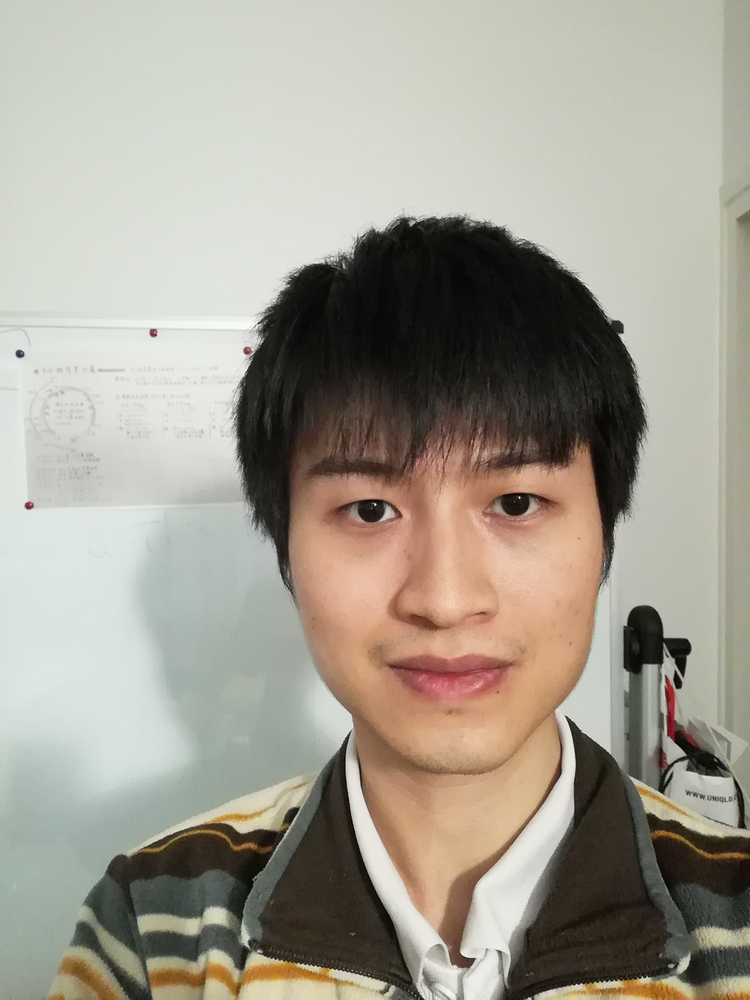

| Mail : yan.shu.prof@gmail.com.antispam (remove .antispam ) phone : +33 (0)6 32 37 15 13 |
 |
I am currently independent researcher, formal machine learning/mathematics researcher at Walnut Algorithms. I finished my PhD thesis at 2016, under supervision of professor Cyril Roberto and professor Nathael Gozlan. My research interests lie on the intersection among partial differential equation, optimal transport theory and functional analysis. More precisely, my research interests are:
Here is my cv (in pdf, march 2020).
Publication list
- (with M. Mihelich, C.Dognin and M. Blot) A Characterization of Mean Squared Error for Estimator with Bagging AISTATS 2020
- (with M. Mihelich) Analytical solution of kth price auction To be appeared in International Journal of Game Theory
- Hamilton-Jacobi equations on graphs and applications Potential Analysis, 2018
- (with M. Fathi) Curvature and transport inequalities for Markov chains in discrete spaces Bernoulli Journal, 2018
- (with N. Gozlan, C. Roberto, P-M. Samson and P. Tetali) Characterization of a class of weak transport-entropy inequalities on the line Annales de l'Institut Henri Poincaré, 2018;
- From Hopf-Lax formula to optimal weak transfer plan To appear in SIAM Journal on Mathematical Analysis
- (with M. Strzelecki) Characterization of convex modified Log-Sobolev inequalities on the line. Annales de l'Institut Henri Poincaré, 2018
Organized Events:
, Université Paris Nanterre, 2016